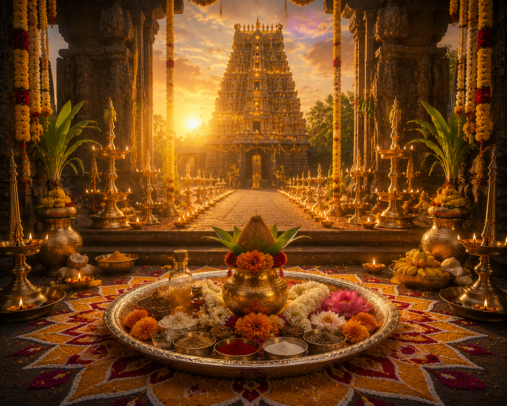

నరక చతుర్దశి హిందూ ధర్మంలో అత్యంత పవిత్రమైన పర్వదినాలలో ఒకటి. ఆశ్వయుజ మాస కృష్ణ పక్ష చతుర్దశి రోజున ఈ పండుగను భక్తిశ్రద్ధలతో జరుపుకుంటారు. శ్రీకృష్ణ పరమాత్మ మరియు సత్యభామ దేవి నరకాసురుడిని సంహరించిన విజయాన్ని స్మరించుకుంటూ ఈ పర్వదినాన్ని నిర్వహిస్తారు.
దీపావళి మహోత్సవంలో నరక చతుర్దశికి ప్రత్యేక స్థానం ఉంది.
---
నరక చతుర్దశి
భారతీయ మరియు తెలుగు సంప్రదాయ పర్వదినం

౧. పరిచయం
౨. పండుగ ప్రాముఖ్యత
నరక చతుర్దశి అధర్మంపై ధర్మం, అహంకారంపై వినయం, దుష్టత్వంపై దైవశక్తి సాధించిన విజయానికి ప్రతీక.
ఈ రోజున అభ్యంగ స్నానం చేయడం, దీపాలు వెలిగించడం, శ్రీకృష్ణుడిని ఆరాధించడం ద్వారా పాపాలు తొలగి ఆయురారోగ్యాలు, శుభఫలాలు కలుగుతాయని శాస్త్రాలు పేర్కొంటాయి.
---
ఈ రోజున అభ్యంగ స్నానం చేయడం, దీపాలు వెలిగించడం, శ్రీకృష్ణుడిని ఆరాధించడం ద్వారా పాపాలు తొలగి ఆయురారోగ్యాలు, శుభఫలాలు కలుగుతాయని శాస్త్రాలు పేర్కొంటాయి.
---
౩. నరకాసురుని కథ
భూదేవి కుమారుడైన నరకాసురుడు బ్రహ్మదేవుని వరప్రభావంతో అత్యంత బలవంతుడిగా మారి దేవతలను, ఋషులను, ప్రజలను బాధించడం ప్రారంభించాడు. అదితి దేవి కుండలాలను అపహరించి, అనేక రాజకుమార్తెలను బంధించి లోకాలన్నిటిలో అధర్మాన్ని వ్యాపింపజేశాడు.
దేవతల ప్రార్థనతో శ్రీకృష్ణ పరమాత్మ సత్యభామతో కలిసి యుద్ధానికి వెళ్లాడు. భూదేవి అంశమైన సత్యభామ చేతుల ద్వారా నరకాసురుడు సంహరించబడ్డాడు. మరణించే ముందు నరకాసురుడు తన సంహార దినాన్ని ప్రజలు ఆనందోత్సవంగా జరుపుకోవాలని కోరగా, శ్రీకృష్ణుడు ఆ వరాన్ని ప్రసాదించాడు.
అప్పటి నుండి నరక చతుర్దశిని ఆనందం, వెలుగు మరియు విజయానికి ప్రతీకగా జరుపుకుంటున్నారు.
---
దేవతల ప్రార్థనతో శ్రీకృష్ణ పరమాత్మ సత్యభామతో కలిసి యుద్ధానికి వెళ్లాడు. భూదేవి అంశమైన సత్యభామ చేతుల ద్వారా నరకాసురుడు సంహరించబడ్డాడు. మరణించే ముందు నరకాసురుడు తన సంహార దినాన్ని ప్రజలు ఆనందోత్సవంగా జరుపుకోవాలని కోరగా, శ్రీకృష్ణుడు ఆ వరాన్ని ప్రసాదించాడు.
అప్పటి నుండి నరక చతుర్దశిని ఆనందం, వెలుగు మరియు విజయానికి ప్రతీకగా జరుపుకుంటున్నారు.
---
౪. చరిత్ర
నరక చతుర్దశి ప్రస్తావన శ్రీమద్భాగవతం, విష్ణు పురాణం, హరివంశం, స్కాంద పురాణం వంటి అనేక గ్రంథాలలో కనిపిస్తుంది.
ప్రాచీన కాలం నుండి భారతదేశవ్యాప్తంగా దీపావళి మహోత్సవంలో భాగంగా ఈ పర్వదినాన్ని నిర్వహిస్తున్నారు.
---
ప్రాచీన కాలం నుండి భారతదేశవ్యాప్తంగా దీపావళి మహోత్సవంలో భాగంగా ఈ పర్వదినాన్ని నిర్వహిస్తున్నారు.
---
౫. నరక చతుర్దశి ఎలా జరుపుకుంటారు
బ్రహ్మముహూర్తంలో నువ్వుల నూనెతో అభ్యంగ స్నానం చేస్తారు. అనంతరం శ్రీకృష్ణుడు, సత్యభామ దేవిని పూజించి దీపాలు వెలిగిస్తారు.
ఇళ్లను శుభ్రపరచి రంగవల్లులు వేసి, మిఠాయిలు తయారుచేసి బంధుమిత్రులతో పంచుకుంటారు. దానం, అన్నదానం చేయడం కూడా ఈ రోజున విశేష పుణ్యకార్యంగా భావిస్తారు.
---
ఇళ్లను శుభ్రపరచి రంగవల్లులు వేసి, మిఠాయిలు తయారుచేసి బంధుమిత్రులతో పంచుకుంటారు. దానం, అన్నదానం చేయడం కూడా ఈ రోజున విశేష పుణ్యకార్యంగా భావిస్తారు.
---
౬. ప్రధాన ఆచారాలు
* అభ్యంగ స్నానం
* శ్రీకృష్ణ పరమాత్మ పూజ
* సత్యభామ దేవి ఆరాధన
* దీపాలు వెలిగించడం
* దేవాలయ దర్శనం
* దానం, అన్నదానం
* కుటుంబ సభ్యులతో పండుగ జరుపుకోవడం
---
* శ్రీకృష్ణ పరమాత్మ పూజ
* సత్యభామ దేవి ఆరాధన
* దీపాలు వెలిగించడం
* దేవాలయ దర్శనం
* దానం, అన్నదానం
* కుటుంబ సభ్యులతో పండుగ జరుపుకోవడం
---
౭. ప్రధానంగా ఎక్కడ జరుపుకుంటారు
* ఆంధ్రప్రదేశ్
* తెలంగాణ
* కర్ణాటక
* తమిళనాడు
* మహారాష్ట్ర
* గోవా
* గుజరాత్
* భారతదేశమంతటా
---
* తెలంగాణ
* కర్ణాటక
* తమిళనాడు
* మహారాష్ట్ర
* గోవా
* గుజరాత్
* భారతదేశమంతటా
---
౮. ఆధ్యాత్మిక సందేశం
నరక చతుర్దశి మనలోని అహంకారం, లోభం, కోపం, అసూయ వంటి దుర్గుణాలను తొలగించి సత్యం, ధర్మం, భక్తి, దయతో జీవించాలని బోధిస్తుంది.
ప్రతి మనిషి తన అంతరంగంలోని చీకటిని తొలగించి జ్ఞానజ్యోతిని వెలిగించుకోవాలని ఈ పర్వదినం సందేశం అందిస్తుంది.
---
ప్రతి మనిషి తన అంతరంగంలోని చీకటిని తొలగించి జ్ఞానజ్యోతిని వెలిగించుకోవాలని ఈ పర్వదినం సందేశం అందిస్తుంది.
---
౯. ఆసక్తికర విషయాలు
* నరక చతుర్దశి దీపావళికి ముందు రోజు జరుపుకుంటారు.
* ఈ రోజున చేసే అభ్యంగ స్నానం అత్యంత పుణ్యప్రదమైనదిగా భావిస్తారు.
* నరకాసురుని సంహారంలో సత్యభామ దేవికి విశిష్టమైన స్థానం ఉంది.
* అనేక ప్రాంతాలలో ఈ రోజున ఉదయాన్నే దీపాలు వెలిగించే సంప్రదాయం ఉంది.
* దానం, అన్నదానం చేయడం మహాపుణ్యకార్యంగా భావిస్తారు.
---
* ఈ రోజున చేసే అభ్యంగ స్నానం అత్యంత పుణ్యప్రదమైనదిగా భావిస్తారు.
* నరకాసురుని సంహారంలో సత్యభామ దేవికి విశిష్టమైన స్థానం ఉంది.
* అనేక ప్రాంతాలలో ఈ రోజున ఉదయాన్నే దీపాలు వెలిగించే సంప్రదాయం ఉంది.
* దానం, అన్నదానం చేయడం మహాపుణ్యకార్యంగా భావిస్తారు.
---
౧౦. నరక చతుర్దశి రోజున చేయవలసిన ముఖ్యమైనవి
* బ్రహ్మముహూర్తంలో అభ్యంగ స్నానం చేయాలి.
* శ్రీకృష్ణ పరమాత్మను పూజించాలి.
* దీపాలు వెలిగించాలి.
* దేవాలయ దర్శనం చేయాలి.
* దానం, అన్నదానం చేయాలి.
* కుటుంబ సభ్యులతో ఆనందంగా పండుగ జరుపుకోవాలి.
* ధర్మమార్గంలో నడవాలని సంకల్పించాలి.
---
* శ్రీకృష్ణ పరమాత్మను పూజించాలి.
* దీపాలు వెలిగించాలి.
* దేవాలయ దర్శనం చేయాలి.
* దానం, అన్నదానం చేయాలి.
* కుటుంబ సభ్యులతో ఆనందంగా పండుగ జరుపుకోవాలి.
* ధర్మమార్గంలో నడవాలని సంకల్పించాలి.
---
౧౧. ఆధారాలు
[object Object]
గ్రంథ ఆధారాలు
* శ్రీమద్భాగవత మహాపురాణం
* విష్ణు పురాణం
* హరివంశం
* స్కాంద పురాణం
* విష్ణు పురాణం
* హరివంశం
* స్కాంద పురాణం
ఇతర ఆధారాలు
* భారతీయ ధార్మిక సంప్రదాయ గ్రంథాలు
* ప్రముఖ శ్రీకృష్ణ దేవాలయాల ప్రచురణలు
---
* ప్రముఖ శ్రీకృష్ణ దేవాలయాల ప్రచురణలు
---
౧౨. ముగింపు
నరక చతుర్దశి కేవలం ఒక పండుగ మాత్రమే కాదు. ఇది అధర్మంపై ధర్మం సాధించిన విజయాన్ని, అజ్ఞానంపై జ్ఞానం సాధించిన వెలుగును స్మరింపజేసే పవిత్ర పర్వదినం.
**"మనలోని నరకాసుర స్వభావాన్ని జయించి, ధర్మం, దయ, భక్తి, జ్ఞానంతో జీవించడం — ఇదే నరక చతుర్దశి యొక్క శాశ్వత సందేశం."**
**"మనలోని నరకాసుర స్వభావాన్ని జయించి, ధర్మం, దయ, భక్తి, జ్ఞానంతో జీవించడం — ఇదే నరక చతుర్దశి యొక్క శాశ్వత సందేశం."**
✦ సర్వే జనాః సుఖినో భవంతు ✦